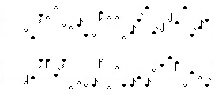

| The simplest example of scaling noise, called white noise, is easy to generate. |
| * Set a range of note durations (for example, whole, half, quarter, eighth, sixteenth), |
| * and a range of tones. |
| * Then use a random number generator to select the duration and tone of each note in sequence. |
| Except for a uniform change of the duration of the notes, playing this composition at a different speed will give something sounding about the same. |
| This kind of composition wanders all over the place and does not sound very interesting. |
| Indeed, some people find these compositions unpleasant: there is no relation of one note to the next, no pattern or familiarity one can perceive. |
| Yet this was the underlying construction of some of John Cage's stochastic music experiments in the 1960s. |
|  |
| Listen: |
| Thanks to Harlan Brothers for the midi files of these tunes. |
Return to 1/f aspects of music.